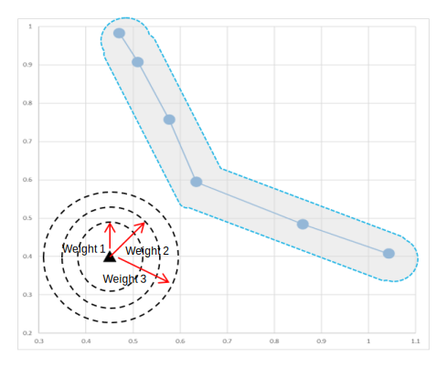
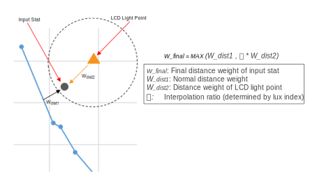

More frequent use of the front camera LCD as a flashlight requires that the bright LCD light strength be considered in the AWB estimation. When used as a flashlight, the LCD light is very close to objects and is an additional light source, so the normal AWB process should compensate for the LCD light source influence.
A stat in the vicinity of the LCD light source point (LCD Reference
Point) has more influence from the LCD light. The LCD distance weight
module assigns a distance-based weight to this stat with respect to the user-defined
distance zones represented by the concentric circles in the image.

The LCD Flash Weight Vector start/end values define distance zones (illustrated with the three red arrows) to which weight values are assigned. The distance is the measurement between the LCD reference point and an input stat.
The final distance weight for the stat is computed by interpolation between the two distance weights: one weight from the normal distance weight module and another weight from the LCD distance weight module. The LCD Flash Weight Vector Interpolation start/end values define lux index trigger zones to which interpolation ratio values are assigned.
The interpolation of two different distance weights can represent a mixture of
light sources as illustrated.
